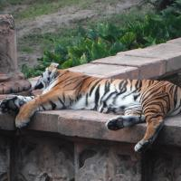

 The tiger (Panthera tigris) is the largest extant cat species and a member of the genus Panthera. It is most recognisable for its dark vertical stripes on orange-brown fur with a lighter underside. It is an apex predator, primarily preying on ungulates such as deer and wild boar. It is territorial and generally a solitary but social predator, requiring large contiguous areas of habitat, which support its requirements for prey and rearing of its offspring. Tiger cubs stay with their mother for about two years, before they become independent and leave their mother's home range to establish their own. The tiger (Panthera tigris) is the largest extant cat species and a member of the genus Panthera. It is most recognisable for its dark vertical stripes on orange-brown fur with a lighter underside. It is an apex predator, primarily preying on ungulates such as deer and wild boar. It is territorial and generally a solitary but social predator, requiring large contiguous areas of habitat, which support its requirements for prey and rearing of its offspring. Tiger cubs stay with their mother for about two years, before they become independent and leave their mother's home range to establish their own. The tiger (Panthera tigris) is the largest extant cat species and a member of the genus Panthera. It is most recognisable for its dark vertical stripes on orange-brown fur with a lighter underside. It is an apex predator, primarily preying on ungulates such as deer and wild boar. It is territorial and generally a solitary but social predator, requiring large contiguous areas of habitat, which support its requirements for prey and rearing of its offspring. Tiger cubs stay with their mother for about two years, before they become independent and leave their mother's home range to establish their own. The tiger (Panthera tigris) is the largest extant cat species and a member of the genus Panthera. It is most recognisable for its dark vertical stripes on orange-brown fur with a lighter underside. It is an apex predator, primarily preying on ungulates such as deer and wild boar. It is territorial and generally a solitary but social predator, requiring large contiguous areas of habitat, which support its requirements for prey and rearing of its offspring. Tiger cubs stay with their mother for about two years, before they become independent and leave their mother's home range to establish their own. The tiger (Panthera tigris) is the largest extant cat species and a member of the genus Panthera. It is most recognisable for its dark vertical stripes on orange-brown fur with a lighter underside. It is an apex predator, primarily preying on ungulates such as deer and wild boar. It is territorial and generally a solitary but social predator, requiring large contiguous areas of habitat, which support its requirements for prey and rearing of its offspring. Tiger cubs stay with their mother for about two years, before they become independent and leave their mother's home range to establish their own. The tiger (Panthera tigris) is the largest extant cat species and a member of the genus Panthera. It is most recognisable for its dark vertical stripes on orange-brown fur with a lighter underside. It is an apex predator, primarily preying on ungulates such as deer and wild boar. It is territorial and generally a solitary but social predator, requiring large contiguous areas of habitat, which support its requirements for prey and rearing of its offspring. Tiger cubs stay with their mother for about two years, before they become independent and leave their mother's home range to establish their own.
The tiger once ranged widely from the Eastern Anatolia Region in the west to the Amur River basin, and in the south from the foothills of the Himalayas to Bali in the Sunda islands. Since the early 20th century, tiger populations have lost at least 93% of their historic range and have been extirpated in Western and Central Asia, from the islands of Java and Bali, and in large areas of Southeast and South Asia and China. Today's tiger range is fragmented, stretching from Siberian temperate forests to subtropical and tropical forests on the Indian subcontinent and Sumatra.